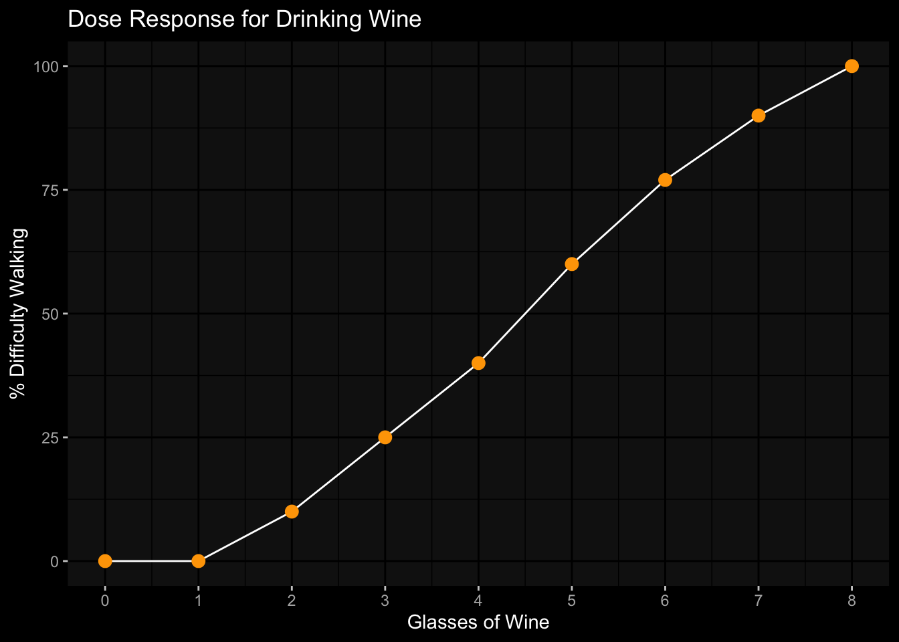
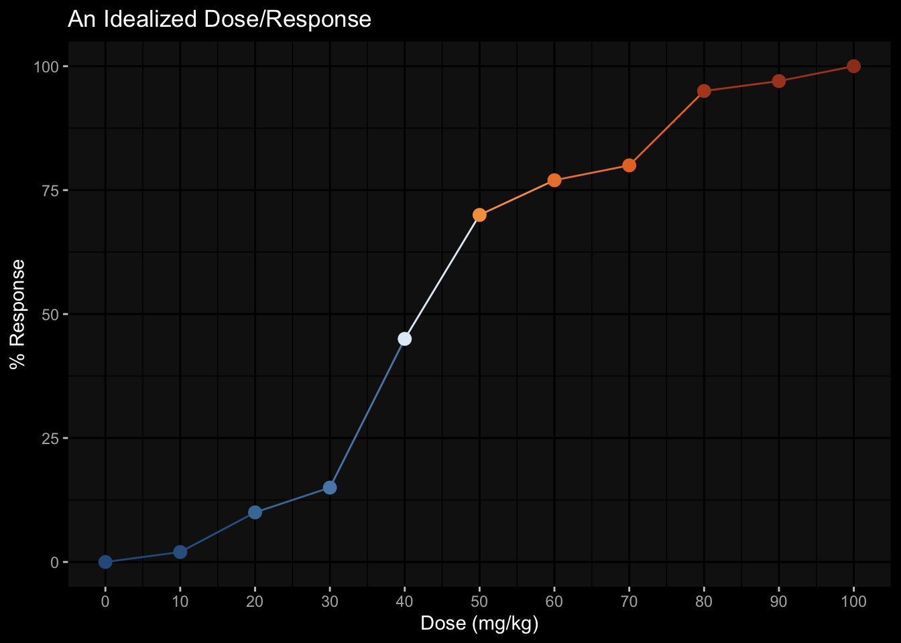

# kg = lbs / 2.205
amt_mg = 100
wt_kg = 70.30
oral_dose = function(amt_mg, wt_kg){
dose = amt_mg / wt_kg
glue::glue("Oral Dose = {round(dose,2)} mg/kg")
}
oral_dose(amt_mg, wt_kg)Oral Dose = 1.42 mg/kgThere are three basic and interwoven principles of toxicology:
hazard x exposure = riskWhile these principles may form much of the foundation of toxicology, when it comes to any specific substance there is likely to be controversy. Disagreement may arise on the relative importance of any one of these principles while trying to evaluate implications for public health. Exploring these principles is an essential first step before examining their application to any specific substance.
In toxicology, the focus is usually on adverse reaction or response, but it is equally useful to consider a full range of responses from desirable to undesirable. Experience teaches us how to moderate the dose to achieve a desired result or avoid an undesirable effect.
Paracelsus stated correctly that the “… dose differentiates a poison from a remedy”, it is the individual that must constantly be aware of the dose and their particular response.
Dose is the amount of exposure to an agent, a quantitative measure of the exposure related to the subject or individual. For a chemical agent or drug the dose is the amount of the material in relation to body weight. Typically, the amount of material is measured in grams or thousandths of a gram (milligrams, mg) and body weight is measured in kilograms (kg), equal to one thousand grams. The dose is the amount of material consumed divided by body weight or mg/kg.
Calculate the dose
amt_mg = amount of material consumed (mg)
wt_kg = body weight in (kg)
oral_dose = amt_mg / wt_kgThere are approximately 100 mg of caffeine in a cup of coffee. The actual amount of caffeine in a cup of coffee depends on the coffee bean, how the coffee was prepared and the size of the cup. Let us use an adult weighing 155 lbs (about 70 kg) consuming this one-cup of coffee.
# kg = lbs / 2.205
amt_mg = 100
wt_kg = 70.30
oral_dose = function(amt_mg, wt_kg){
dose = amt_mg / wt_kg
glue::glue("Oral Dose = {round(dose,2)} mg/kg")
}
oral_dose(amt_mg, wt_kg)Oral Dose = 1.42 mg/kgThis adult would receive a dose of 1.42 mg/kg of caffeine.
For our example of coffee caffeine:
Analytical chemists can accurately determine the amount of a specific agent in a material. Some foods, such as table salt or sugar, are relatively pure and the dose easily calculated by weighing the material. Package labeling usually indicates how many milligrams of the drug each pill contains, so the dose can be calculated.
Calculating the dose following workplace or environmental exposure can be far more difficult. If the agent is in the air, then calculation of the dose must consider not only the concentration in the air but also the duration of the exposure, rate of breathing and body weight. The amount of air inhaled over a period of time is estimated from laboratory data. Given this information, it is possible to estimate the dose according to the following formula:
Airborne agent
inhal_dose = Inhalation dose (mg/kg)
air_concent = Air concentration of agent (mg/ml)
vol_air = volume of air inhaled per hour (ml/hr)
dur_expos = duration of exposure (hr)
b_wt = body weight (kg)
inhal_dose = air_concent * vol_air * dur_expos / b_wtFor non-chemical exposures, other variables and different units of measurement are required. Workplace and environmental exposures are often repeated and ongoing over an extended period of time. The health effects of repeated long-term exposures can be very different from one short-term exposure.
For many drugs, we are looking for the immediate or acute response following exposure. We consume common painkillers with the desire to quickly stop our headache. Long-term repeated use, however, can have undesirable effects on the stomach or liver.
Acute exposure - is a single or very limited number of exposures over a short period of time.
Chronic exposure is repeated exposure over a long period of time.
There is often a range of responses associated with any particular agent.
The acute response to a single dose is often the easiest to characterize, but the response to multiple exposures over a long period of time may be the most important. For a long time, it was thought that the only serious complication from childhood lead exposure was death resulting from high exposure. Subsequent research demonstrated that even small amounts of lead exposure during childhood could result in brain damage that lasts a lifetime. Determining what responses are most important is a central aspect of many debates in toxicology.
In general, it is true that for any individual, the greater the dose the greater the response. It is important to know if a substance distributes into body water because we made up of approximately 75% water. An individual’s response to the caffeine varies with the dose and corresponding amount of circulating caffeine. Body size is a critical factor in determining dose and any subsequent response.

This plot illustrates the critical relationship between dose and response. In this case, we define the response as difficulty in walking and the dose of or exposure to alcohol as a glass of wine. To change from exposure to dose we would need to know the body weight and amount of alcohol in the glass of wine.
In toxicology, the dose at which one half or 50% of the population is affected is often calculated and used to compare the toxicity of different agents. In this example, 50% of the population is affected after exposure to 4.5 glasses of wine.

For doses less than 30 mg/kg have no effect and doses above 50 mg/kg effect half the people. The “S”’-shaped idealized dose / response plot, which is typical of most types of exposure. This “S” shaped cure illustrates that at low doses there is little or no response while at high doses all individuals respond or demonstrate the effect. In this situation, 50% of the subjects respond at a dose of 42 mg/kg, while 99% of the subjects responded at 90 mg/kg.
It is important to emphasize that if we repeat this experiment the results would be slightly different. Each individual varies from one time to the next and there is even greater variability between individuals. Variability is a consistent theme in biology, complicating data analysis and interpretation of results. These variations lead to the need for statistical evaluation of data.
The biological effects of an agent often span a broad range from beneficial to harmful, depending on the dose and individual sensitivity. The scientific discipline of toxicology developed in an effort to understand and characterize the potentially harmful or hazardous properties of an agent.
Risk is the probability of:
An agent or situation that can produce or cause a harmful or adverse effect is a Hazard.
Hazard is an intrinsic property of a substance and any particular substance may have a range of hazards associated with it depending upon specific conditions or circumstances.
On a daily basis, we routinely confront a range of potentially hazardous agents, cooking, cleaning, driving, etc. We use these potentially hazardous agents but are careful to avoid conditions that will result in the expression of their hazardous properties.Hazard and risk are linked by exposure. Reducing the hazard, the exposure, or both can lower risk. If there is no exposure, then there is no risk or possibility of harm.
In the past, the hazard associated with any particular substance was related to immediate or obvious harm. As our knowledge and experience increase, so too does our appreciation of an agent’s ability to produce unexpected consequences or harm. Take for example DDT, a very powerful pesticide useful in the eradication of mosquitoes. As Rachel Carson so eloquently pointed out, DDT devastated bird populations not directly but indirectly by thinning eggshells to such an extent that the eggshells failed. This resulted in a devastating decline in bird populations, particularly for birds consuming animals. Still later we learned that DDT was a very persistent chemical and highly soluble in fat. DDT thus accumulated up the food chain and in this case birds at the top of the food chain were most affected.
Humans are also at the top of the food chain, and through a variety of means, DDT ends up in the food supply and becomes stored in body fat. When women are breast-feeding, fat and DDT are mobilized and become the food of nursing infants, which represents a large dose to a small infant. We are still unsure of the consequences of fetal exposure to DDT and its effects on the developing organism. Many other fat-soluble chemicals, such as dioxin and PCBs are known to contaminate breast milk. Lead is another example of a major public health disaster that occurred because the consequences of low-level lead exposure to the developing nervous system were not appreciated.
Historically, potentially toxic agents have been ranked by their lethality, or the amount of material that causes death. In this measure, hazard is defined only as death, obviously only the grossest measure of an agent’s effect. Because of individual variability or susceptibility, a standardized measure is the dose (in units of mg/kg) that produces death in half of the subjects, a 50% response.
This is called an LD50 or lethal dose for 50% of the population. The LD50 is one measure of the toxicity of a substance, its capacity for causing illness or death. The LD50 is usually determined on populations of test animals such as rats and mice. Determination of an LD50 is based on a single acute exposure to an agent and the single response of death. Although the LD50 can be useful in comparing the gross hazards of agents, it is not necessarily relevant to a response produced by low-level chronic exposure.
Problem with LD50
LD50s are misleading if used as the only characterization of the toxicity of a substance.
Yet they have similar LD50s.
lists the LD50s of a variety of common agents. Since the LD50 is the amount of material required to produce death, a higher LD50 implies a lower toxicity and vice versa.
Approximate Acute LD50s of Some Common Chemical Agents
| Agent | LD-50 (mg/kg) |
|---|---|
| Ethyl alcohol | 10,000 |
| Salt (sodium chloride) | 4,000 |
| Iron (Ferrous sulfate) | 1,500 |
| Morphine | 900 |
| Mothballs (paradichlorobenzene) | 500 |
| Aspirin | 250 |
| DDT | 250 |
| Cyanide | 10 |
| Nicotine | 1 |
| Tetrodotoxin (from fish) | 0.01 |
| Dioxin (TCDD) | 0.001 (some species) |
| Botulinum Toxin | 0.00001 |
Fortunately, the LD50 is no longer recognized as an adequate or even particularly useful assessment of an agent’s ability to cause harm. Toxicologists have developed a wide array of tests to determine if an agent can produce an adverse effect. A variety of tests are performed to evaluate the potential harmful effects across all organ systems.
Exposure, like many of the terms in toxicology, has several difference aspects, the most important of which are:
Exposure is also affected by absorption. Even though we may come in contact with an agent, if little is taken up into the body (or absorbed), there is little effect. What is not absorbed (and even some of what is absorbed) may be excreted from the body by various routes, including the urine, feces, and sweat or through exhalation. Excretion reduces the effect because it lowers the amount of toxicant in the body, thus reducing exposure to sensitive organs.
There are two types of exposure that deserve special attention:
In real life, however, we are often exposed to a mixture of chemical agents. Multiple agents may interact and effect absorption or how the body reacts to the chemical. The body has a very sophisticated system to metabolize and eliminate chemicals form the body; this system plays an important role in protecting us from hazardous substances.
There are four main routes of exposure:
Injections can take several forms. An injection directly into a blood vessel bypasses most of the absorption barriers and the drug will have almost full and immediate access to the most organs of the body.
intramuscular (IM) medications which slows absorption as the drug is slowly taken up by the blood supplying the muscle.
subcutaneous (SC) injections can be made just under the skin, commonly used for allergy testing or tuberculin (TB) tests
Skin is the largest organ of the body and does an amazing job of protecting us from most agents. However, the skin is an important route of exposure to some agents and also a site of highly adverse reactions.
In many cases, the skin is an excellent barrier to chemical agents, but some solvents can readily penetrate the skin. The advantage of a skin patch in that the drug will be absorbed a constant slow rate, thus keeping the drug blood levels relatively constant.
Inhalation is an excellent route of exposure to many agents, including the oxygen essential for life. The lungs are very rich in blood to facilitate the absorption of oxygen and thus allow the rapid absorption of other agents directly into the bloodstream, quickly producing an effect.
Carbon monoxide is a potentially lethal gas that can be generated in the home by poorly ventilated heaters, faulty furnaces, or a car idling in an attached garage. Carbon monoxide is readily taken up by the blood cells by the same mechanism as oxygen. In fact, carbon monoxide binds to the hemoglobin in the blood cells better than oxygen, so exposure can cause serious injury and even death through lack of oxygen intake.
Ingestion of substances orally allows absorption from the stomach and intestines. This is a critical route of exposure for many agents, from essential carbohydrates, proteins, and vitamins, to unwanted pesticides and lead. All that is ingested is not necessarily absorbed, and absorption can be dependent on age.
The increased absorption of certain agents at different times of life is related to the body’s demand for important elements. Alcohol and caffeine are readily absorbed by the stomach, making for two of the most popular drugs in our culture. Oral exposure also occurs through our food and drinking water, so it is imperative to have unpolluted water and a safe food supply.
Frequency can refer not only to the number of times the exposure occurred, but also to the time between exposures. Frequent exposure of a short duration results in rapidly elevated blood levels of any agent (assuming it’s absorbed).
It takes approximately 30 minutes to absorb the caffeine from a cup of coffee and reach your peak blood caffeine levels. The harmful or toxic effects of an agent are often dependent on the frequency of exposure and the time between exposures.
In toxicology, duration is usually divided into three periods:
acute exposure (usually just one or two exposures of short duration)sub-chronic exposure (multiple exposures over many days or perhaps months)chronic exposure (long-term or even lifetime exposure)The terms acute and chronic are also used to characterize the time delay between exposure and the onset of symptoms.
Acute effects are those noticed directly following exposure and are usually easily related to the agent.
Chronic or long-term effects of an agent may occur years later and are often very difficult to attribute to a particular cause.